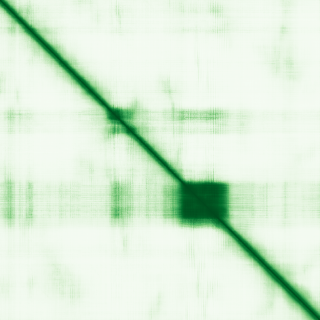
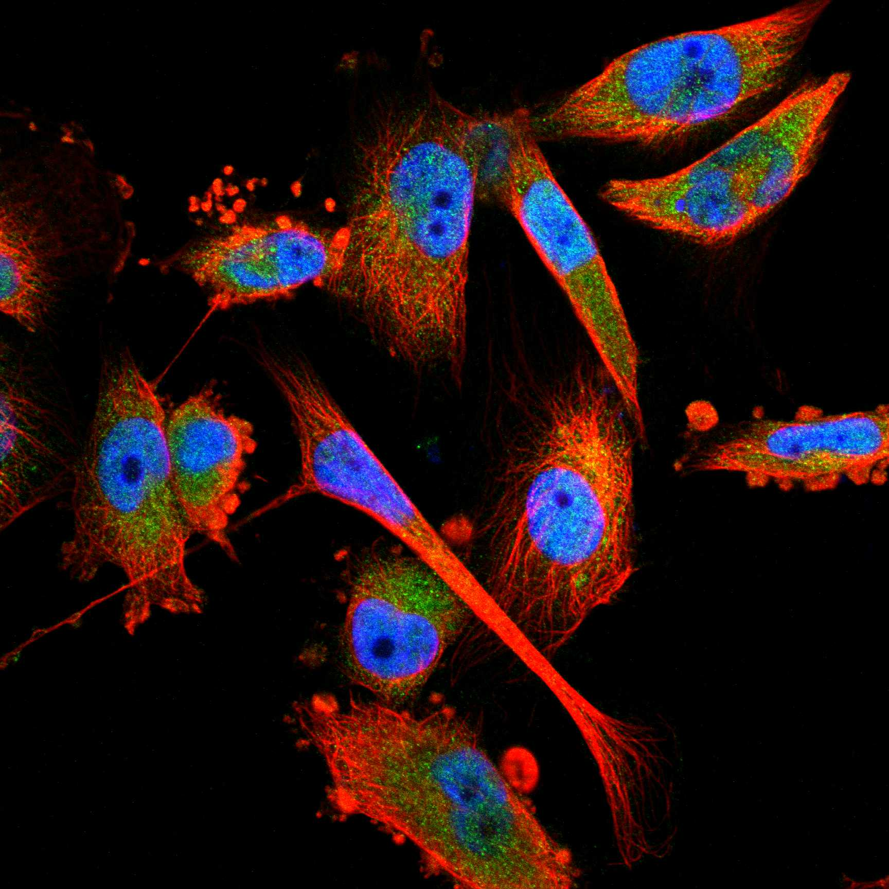
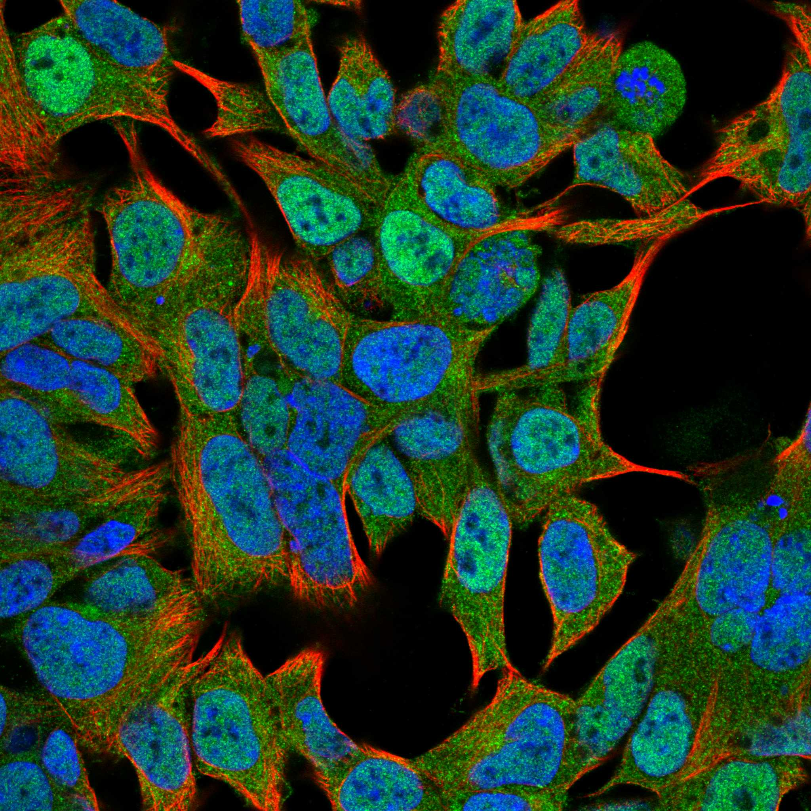

type: protein-evaluation gene: "HLX" date: 2026-06-01 tags: [protein-scout, nucleoplasm, evaluation] status: scored ---
HLX 核蛋白评估报告
1. 基本信息
| 项目 | 内容 |
|---|---|
| 基因名 / 别名 | HLX / HLX1 |
| 蛋白全名 | H2.0-like homeobox protein |
| 蛋白大小 | 488 aa / 50.8 kDa |
| UniProt ID | Q14774 |
2. 评分总览
| 维度 | 得分 | 新权重 | 加权后 | 关键证据摘要 |
|---|---|---|---|---|
| 核定位特异性 | 8/10 | ×4 | 32.0 | HPA: Nucleoplasm+Cytosol Approved; UniProt: Nucleus; GO: chromatin ISA |
| 蛋白大小 | 6/10 | ×1 | 6.0 | 488 aa, 50.8 kDa |
| 研究新颖性 | 2/10 | ×5 | 10.0 | PubMed strict=95, broad=177 |
| 三维结构 | 5/10 | ×3 | 15.0 | AlphaFold pLDDT 55.4; pLDDT <50 55.9%; 无 PDB |

| 调控结构域 | 7/10 | ×2 | 14.0 | Homeobox 转录因子; bHLH domain; Th1 分化关键调节因子 |
| PPI 网络 | 7/10 | ×3 | 21.0 | TLE 家族 STRING/IntAct 强互证; CSNK2A1/A2 共免疫沉淀 |
| 加权总分 | 98/180** | |||
| 互证加分 | +1.0 | HPA + UniProt + GO 核定位多源互证; TLE 共抑制复合体多库一致 | ||
| 归一化总分 (÷1.83) | 53.6/100** |
3. 详细分析
3.1 核定位证据
| 来源 | 定位 | 可信度 |
|---|---|---|
| UniProt | Nucleus (ECO:0000255) | Predicted |
| GO-CC | chromatin (ISA:NTNU_SB); nucleus (IEA:UniProtKB-SubCell) | Mixed |
| Protein Atlas (IF) | Nucleoplasm, Cytosol (Approved) | Approved |
HPA IF 状态: IF available (Approved reliability) — HPA 主定位为 Nucleoplasm + Cytosol，获 Approved 认证。作为典型的 homeobox 转录因子，核定位高度可信。UniProt 功能注释明确其参与 TBX21/T-bet 依赖的 Th1 成熟与维持（By similarity），进一步支持其核内功能。
3.2 结构与结构域
| 指标 | 数值 |
|---|---|
| AlphaFold | AF-Q14774-F1 |
| 平均 pLDDT | 55.4 |
| pLDDT >90 | 11.1% |
| pLDDT 70-90 | 7.0% |
| pLDDT 50-70 | 26.0% |
| pLDDT <50 | 55.9% |
| PDB | 无 |
| InterPro | IPR052497, IPR001356, IPR020479, IPR017970, IPR009057, IPR000047 |
| Pfam | PF00046 (Homeobox) |
AlphaFold PAE 状态: PAE 已下载，见上图。整体 pLDDT 偏低（55.4），超过半数残基置信度低于 50，提示蛋白含大量无序区，仅 homeobox domain 区域可能有较可靠折叠。
3.3 研究现状
| 指标 | 数值 |
|---|---|
| PubMed strict (Title/Abstract) | 95 |
| PubMed broad | 177 |
| 别名 | HLX1（未用于 scoring） |
关键文献覆盖 medulloblastoma 中 lnc-HLX-2-7/HLX/MYC 正反馈机制（PMID:38460130）、Th1 免疫调控、比较基因组学（PMID:15935575）及 GWAS 关联研究。研究量较大，接近 rejection 阈值，但仍有部分功能缺口。
3.4 PPI 网络（三源综合）
| Partner | Source | Score/Evidence | Relevance |
|---|---|---|---|
| TLE2 | STRING | 0.744 (exp 0.738) | Co-repressor, strong |
| TLE2 | IntAct | anti tag coIP (PMID:28514442) | Co-repressor |
| TLE4 | STRING | 0.728 (exp 0.698) | Co-repressor |
| TLE4 | IntAct | anti tag coIP (PMID:28514442) | Co-repressor |
| TLE5 | STRING | 0.695 (exp 0.688) | Co-repressor |
| TLE5 | IntAct | anti tag coIP (PMID:28514442) | Co-repressor |
| TLE1 | STRING | 0.644 (exp 0.635) | Co-repressor |
| TLE3 | STRING | 0.663 (exp 0.632) | Co-repressor |
| TLE3 | IntAct | anti tag coIP (PMID:28514442) | Co-repressor |
| CSNK2A1 | IntAct | anti tag coIP (PMID:28514442) | Kinase, nuclear |
| CSNK2A2 | IntAct | anti tag coIP (PMID:28514442) | Kinase, nuclear |
| TBX21 | STRING | 0.894 (exp 0.071) | Th1 master regulator |
| EZH2 | STRING | 0.551 (exp 0.204) | Polycomb, chromatin |
TLE 家族（TLE1-5）在 STRING 和 IntAct 中均以实验证据出现，score 0.64-0.74，evidence 多为 0.6-0.7 的实验分，形成共抑制复合体。CSNK2A1/A2 和 EZH2 进一步支持核内染色质调控功能。
4. 总体评价
HLX 是经典 homeobox 转录因子，核定位确认、TLE 共抑制复合体和染色质调控功能明确。主要劣势是研究热度较高（PM=95）和 AlphaFold 结构置信度偏低。作为已明确功能的 TF，其新颖性有限，但其在 Th1 免疫和 medulloblastoma 中的角色仍有待深入机制研究。建议作为中等优先级核质候选保留。
5. 数据来源
- UniProt: https://www.uniprot.org/uniprotkb/Q14774
- AlphaFold: https://alphafold.ebi.ac.uk/entry/Q14774
- PubMed: https://pubmed.ncbi.nlm.nih.gov/?term=HLX
- Protein Atlas: https://www.proteinatlas.org/ENSG00000136630-HLX


HPA IF 图像已本地嵌入。
PAE 图像暂无数据（未生成本地图片或未可靠获取），结构判断基于AlphaFold pLDDT统计。